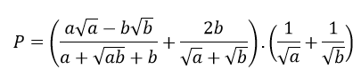
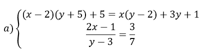
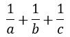

ĐỀ THI THỬ TOÁN
Phần I.Trắc Nghiệm
Câu 1 : Điều kiện xác định của biểu thức P = 2018√x+5
A.x=5 B.x≠5 C.x≤5 D.x≥5
Câu 2 : Trong mặt phẳng tọa độ Oxy, đường thẳng 2x – y = 3 đi qua điểm:
A.(0;-3) B.(2;2) C.(1;3) D.(5;0)
Câu 3: Cho hàm số y = -3x2. Kết luận nào sau đây là đúng :
A. Hàm số trên luôn đồng biến
B. Hàm số trên luôn nghịch biến
C. Hàm số trên đồng biến khi x>0, nghịch biến khi x<0
D. Hàm số trên đồng biến khi x<0, nghịch biến khi x>0
Câu 4: Điều kiện để hàm số y = (- m + 3) x – 7 đồng biến trên R là:
A.m=3 B.m<3 C.m≥3 D.x≠3
Câu 5 : Trong các phương trình sau, phương trình nào có tích hai nghiệm bằng -5
A.x2-3x-5=0 B.x2-3x+5=0 C.x2+3x+5=0 -x2-3x-5=0
Câu 6: Cho tam giác ABC vuông tại A có đường cao AH có BH = 6 cm; CH = 12 cm. Độ dài cạnh góc vuông AB là:
A.6cm B.6√2cm C.6√3cm D.12cm
Câu 7: Cung AB của đường tròn (O; R) có số đo là 60o. Khi đó diện tích hình quạt AOB là:
A. Hàm số trên luôn đồng biến
B. Hàm số trên luôn nghịch biến
C. Hàm số trên đồng biến khi x>0, nghịch biến khi x<0
D. Hàm số trên đồng biến khi x<0, nghịch biến khi x>0
Câu 8: Tứ giác MNPQ nội tiếp đường tròn khi:
A.∠MNP+∠NPQ=180o B.∠MNP=∠MPQ
C.MNPQ là hình thang cân D.MNPQ là hình thoi
Đáp án trắc nghiệm
Phần II.Tự Luận
Bài 1: Cho biểu thức:

a) Tìm điều kiện đối với a và b để biểu thức P có nghĩa rồi rút gọn biểu thức P
b) Khi a và b là 2 nghiệm của phương trình bậc hai x2 – 3x + 1 =0. Không cần giải phương trình này, hãy chứng tỏ giá trị của P là
một số nguyên dương
Bài 2:
a) Tìm điểm cố định của đường thẳng y = (m – 1)x + 2m – 1
b) Trong mặt phẳng tọa độ Oxy, cho đường thẳng (d): y = mx + 1 và Parabol (P): y = 2x2. Tìm m để đường thẳng (d) đi qua điểm A (3; 7). Chứng minh rằng (d) luôn
cắt (P) tại 2 điểm phân biệt C (x1, y1) và D (x2, y2). Tính giá trị của T = x1x2 + y1y2
Bài 3: Giải các phương trình và hệ phương trình sau:

b) 3x4 + x2 – 4 = 0
Bài 4: (3,5 điểm) Cho tam giác ABC nhọn (AB < AC) nội tiếp đường tròn (O). Tiếp tuyến tại A của (O) cắt BC tại S. Gọi I là trung điểm của BC.
a) Chứng minh tứ giác SAOI nội tiếp
b) Vẽ dây cung AD vuông góc với SO tại H. AD cắt BC tại
K. Chứng minh SD là tiếp tuyến của đường tròn (O)
c) Chứng minh SK.SI = SB.SC
d) Vẽ đường kính PQ đi qua điểm I (Q thuộc cung CD), SP cắt đường tròn (O) tại M. Chứng minh M, K, Q thẳng hàng.
Bài 5: (0,5 điểm) Cho a, b, c > 0 và a + b + c = 3. Chứng minh rằng:
a5 + b5 + c5 + ≥ 6